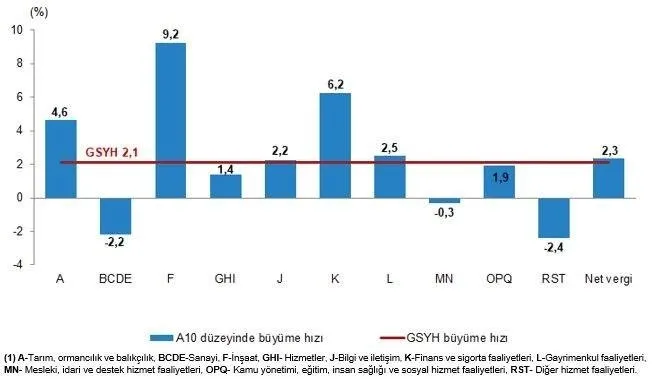

Türkiye Ekonomisinin Büyüme Verileri
21.00 9.12.2024
TÜİK, 2024 yılının üçüncü çeyreğinde Türkiye ekonomisinin bir önceki yılın aynı dönemine göre %1,9 büyüdüğünü açıkladı. Hanehalkı tüketim harcamaları %3,1 artarken, ithalat %9,6 azaldı. Bu dönemde ihracat %0,8 artış gösterdi, işgücü ödemeleri ise %76,3 oranında yükseldi.GSYH 2024 yılı üçüncü çeyrek ilk tahmini; zincirlenmiş hacim endeksi olarak, bir önceki yılın aynı çeyreğine göre %2,1 arttı.
Kaynakça: www.ahaber.com
Nvidia Hakkında Soruşturma Başlatıldı
21.00 9.12.2024
Çin'in piyasa düzenleyicisi ülkenin tekel karşıtı yasasını ihlal ettiği şüphesiyle Nvidia hakkında bir soruşturma başlattığını açıkladı.Çin Devlet Piyasa Düzenleme İdaresi (SAMR), ABD'li çip üreticisinin ayrıca, düzenleyicinin 2020'de söz konusu anlaşmaya ilişkin koşullu onayında belirtilen şartlara göre, Mellanox Technologies Ltd'yi satın alma sürecinde verdiği taahhütleri ihlal ettiğinden şüphelenildiğini belirtti.Soruşturma, ABD'nin geçen hafta Çin'in yarı iletken sektörüne üç yıl içinde üçüncü kez baskı başlatmasının ve çip ekipmanı üreticileri de dahil olmak üzere 140 şirkete ihracatı kısıtlamasının ardından geldi.
Kaynakça: www.hürriyet.com
Türkiye'nin Kredi Risk Primi Düştü

21.00 9.12.2024
Türkiye ekonomisine güven artıyor. Türkiye'nin 5 yıllık kredi risk primi yüzde 1,14 oranında gerileyerek 249.85 seviyesine çekildi ve 58 ayın dibini gördü. CDS primi en son Şubat 2020'de bu seviyelerde seyrediyordu.Türkiye'nin CDS'leri yüzde 1,14 oranında gerileyerek 249,85 seviyesine düştü. Bu gelişmeyle birlikte Türkiye ekonomisine yurt dışından olan ilginin artması bekleniyor. Türkiye'nin CDS primi 2022 yılının Haziran ayında 872 puana kadar yükselmişti. Bu noktadan itibaren düşüş yaşanmaya başladı ve günümüzde son 5 yılın en düşük CDS primine ulaşıldı.